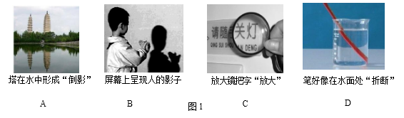
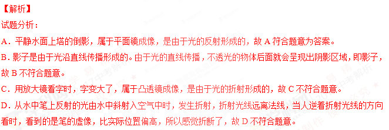
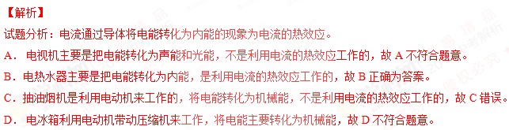

2017年北京市中考物理试题 · 选择题 第1、2、3、4、5题 · 对应解析
1．下列物品中，通常情况下属于导体的是
A．玻璃杯B．陶瓷碗C．铁锅D．塑料勺
【答案】C
【解析】
试题分析：容易导电的物体为导体，如金属、酸碱盐的溶液、大地、人体都是导体，故C符合题意为答案。不容易导电的为绝缘体，像玻璃、陶瓷和塑料通常情况下都属于绝缘体，故ABD不符合题意。
考点：导体和绝缘体
2．图 1 所示的光现象中，由于光的反射形成的是

【答案】A

考点：光的反射
3．下列措施中，能使蒸发减慢的是
A．给湿头发吹热风 B．把湿衣服晾在通风向阳处
C．把盛有酒精的瓶口盖严 D．将玻璃板上的水滴向周围摊开
【答案】C
【解析】
试题分析：影响蒸发的因素有液体温度的高低、液体表面积大小、液体表面上方的空气流动快慢。所以减慢蒸发，就是从降低温度、减小液体面积和减慢空气流动这三个方面来采取措施。
A． 给湿头发吹热风，既提高了液体的温度，又加快了液体表面空气流动的速度，加快了蒸发，故A不符合题意。
B． 把湿衣服晾在通风向阳处，提高了液体温度、加快了空气流动，所以加快了衣服上水分蒸发，故B不符合题意。
C． 把盛有酒精的瓶口盖严减慢了酒精上方的空气流动，从而减慢了酒精的蒸发，故C符合题意为答案。
D． 将玻璃板上的水滴向周围摊开，增大了液体的表面积，加快了蒸发，故D不符合。
考点：影响蒸发快慢的因素
4．下列家用电器中，将电流热效应作为工作原理的是
A．电视机 B．电热水器 C．抽油烟机 D．电冰箱
【答案】B

考点：电流的热效应
5．下列物态变化的实例中，属于液化的是
A．初春，积雪消融 B．夏天，草叶上形成露珠
C．深秋，屋顶的瓦上结了一层霜D．冬天，室外冰冻的衣服变干了
【答案】B
【解析】
试题分析：
A．初春，积雪消融，是物质由固态变成液态，属于熔化现象，故A不符合题意。
B．夏天，草叶上形成露珠是空气中的水蒸气遇冷液化为小水珠，是液化现象，故B符合题意为答案。
C．深秋，屋顶的瓦上结了一层霜，这是空气中的水蒸气由气态直接变为固态，属于凝华现象，故C不符合题意。
D．冬天，室外冰冻的衣服变干了是由固态的冰直接变成水蒸气，是升华现象，故D不符合题意。
答案为B
考点：液化现象